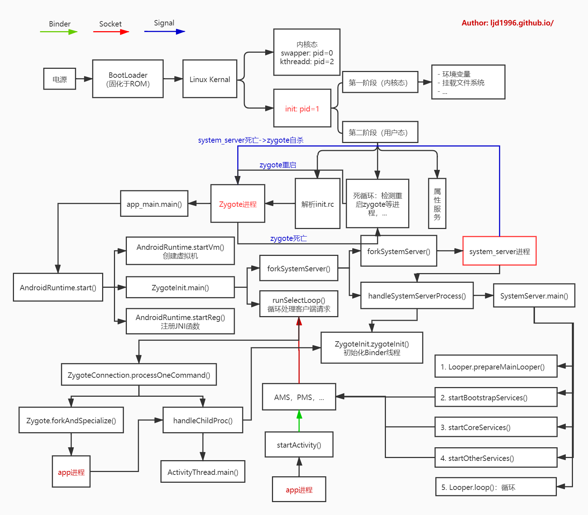

Android系统的启动过程 Android系统简要启动流程如下：
当电源按下时引导芯片代码会从预定义的地方（固化在ROM）开始执行，加载引导程序BootLoader到RAM，然后执行。BootLoader是Android操作系统开始运行前的一个小程序，主要将操作系统OS拉起来并进行。
当内核启动时，设置缓存、被保护存储器、计划列表、加载驱动。此外，还启动了Kernel的swapper进程（pid = 0）和kthreadd进程（pid = 2）：
swapper进程：又称为idle进程，系统初始化过程Kernel由无到有开创的第一个进程, 用于初始化进程管理、内存管理，加载Binder Driver、Display、Camera Driver等相关工作。
kthreadd进程：Linux系统的内核进程，是所有内核进程的鼻祖，会创建内核工作线程kworkder，软中断线程ksoftirqd，thermal等内核守护进程。
当内核完成系统设置时，它首先在系统文件中寻找init.rc文件，并启动init进程。init进程是一个由内核启动的第一个用户级进程，它的进程号是1，父进程id号是0。它的生命周期贯穿整个linux内核运行的始终，linux中所有其它的进程的共同始祖均为init进程。
init进程是所有用户空间的鼻祖, 它会启动servicemanager(binder服务管家，其功能为查询和注册服务), Zygote进程(Java进程的鼻祖). Zygote进程会创建 system_server进程以及各种app进程。如下图所示：
Android系统的启动流程如下图：
init进程 init.cpp init进程的入口函数是system/core/init/init.cpp的main函数，它的代码如下所示：
1 2 3 4 5 6 7 8 9 10 11 12 13 14 15 16 17 18 19 20 21 22 23 24 25 26 27 28 29 30 31 32 33 34 35 36 37 38 39 40 41 42 43 44 45 46 47 48 49 50 51 52 53 54 55 56 57 58 59 60 61 62 63 64 65 66 67 68 69 70 71 72 73 74 75 76 77 78 79 80 81 82 83 84 85 86 87 88 89 90 91 92 93 94 95 96 97 98 99 100 101 102 103 104 105 106 107 108 109 110 111 112 113 114 115 116 int main (int argc, char ** argv) add_environment("PATH" , _PATH_DEFPATH); bool is_first_stage = (getenv("INIT_SECOND_STAGE" ) == nullptr ); if (is_first_stage) { umask(0 ); mount("tmpfs" , "/dev" , "tmpfs" , MS_NOSUID, "mode=0755" ); mkdir ("/dev/pts" , 0755 ); InitKernelLogging(argv); LOG(INFO) << "init first stage started!" ; if (!DoFirstStageMount()) { LOG(ERROR) << "Failed to mount required partitions early ..." ; panic(); } selinux_initialize(true ); if (restorecon("/init" ) == -1 ) { PLOG(ERROR) << "restorecon failed" ; security_failure(); } setenv("INIT_SECOND_STAGE" , "true" , 1 ); setenv("INIT_STARTED_AT" , StringPrintf("%" PRIu64, start_ms).c_str(), 1 ); char * path = argv[0 ]; char * args[] = { path, nullptr }; execv(path, args); PLOG(ERROR) << "execv(\"" << path << "\") failed" ; security_failure(); } InitKernelLogging(argv); LOG(INFO) << "init second stage started!" ; property_init(); process_kernel_dt(); process_kernel_cmdline(); export_kernel_boot_props(); property_set("ro.boottime.init" , getenv("INIT_STARTED_AT" )); property_set("ro.boottime.init.selinux" , getenv("INIT_SELINUX_TOOK" )); unsetenv("INIT_SECOND_STAGE" ); unsetenv("INIT_STARTED_AT" ); unsetenv("INIT_SELINUX_TOOK" ); unsetenv("INIT_AVB_VERSION" ); selinux_initialize(false ); selinux_restore_context(); signal_handler_init(); start_property_service(); while (true ) { int epoll_timeout_ms = -1 ; if (!(waiting_for_prop || ServiceManager::GetInstance().IsWaitingForExec())) { am.ExecuteOneCommand(); } if (!(waiting_for_prop || ServiceManager::GetInstance().IsWaitingForExec())) { restart_processes(); if (process_needs_restart_at != 0 ) { epoll_timeout_ms = (process_needs_restart_at - time(nullptr )) * 1000 ; if (epoll_timeout_ms < 0 ) epoll_timeout_ms = 0 ; } if (am.HasMoreCommands()) epoll_timeout_ms = 0 ; } epoll_event ev; int nr = TEMP_FAILURE_RETRY(epoll_wait(epoll_fd, &ev, 1 , epoll_timeout_ms)); if (nr == -1 ) { PLOG(ERROR) << "epoll_wait failed" ; } else if (nr == 1 ) { ((void (*)()) ev.data.ptr)(); } } return 0 ; }
第一阶段：
判断及增加环境变量
创建文件系统目录并挂载相关的文件系统
重定向输入输出/内核Log系统
挂载一些分区设备
完成SELinux相关工作
is_first_stage 收尾
第二阶段：
初始化属性域，清空环境变量
完成SELinux相关工作
启动属性服务
解析配置文件，执行各个阶段的动作，创建Zygote的工作就是在其中的某个阶段完成的。
init进入一个无限循环，并且等待一些事情的发生。
rc文件语法 rc文件主要包含Action、Service、Command、Options，其中对于Action和Service的名称都是唯一的，对于重复的命名视为无效。
Action Action：通过触发器trigger，即以on开头的语句来决定执行相应的service的时机，具体有如下时机：
on early-init：在初始化早期阶段触发；on init：在初始化阶段触发；on late-init：在初始化晚期阶段触发；on boot/charger：当系统启动/充电时触发，还包含其他情况，此处不一一列举；on property:<key>=<value>：当属性值满足条件时触发；
Service 服务Service，以service开头，由init进程启动，一般运行在init的一个子进程，所以启动service前需要判断对应的可执行文件是否存在。init生成的子进程，定义在rc文件，其中每一个service在启动时会通过fork方式生成子进程。
例如：service servicemanager /system/bin/servicemanager代表的是服务名为servicemanager，服务执行的路径为/system/bin/servicemanager。
Command 下面列举常用的命令
1 2 3 4 5 6 7 8 9 10 class_start <service_class_name>： 启动属于同一个class的所有服务； start <service_name>： 启动指定的服务，若已启动则跳过； stop <service_name>： 停止正在运行的服务 setprop <name> <value>：设置属性值 mkdir <path>：创建指定目录 symlink <target> <sym_link>： 创建连接到<target>的<sym_link>符号链接； write <path> <string>： 向文件path中写入字符串； exec： fork并执行，会阻塞init进程直到程序完毕； exprot <name> <name>：设定环境变量； loglevel <level>：设置log级别
Options Options是Service的可选项，与service配合使用。
1 2 3 4 5 6 7 8 disabled: 不随class自动启动，只有根据service名才启动； oneshot: service退出后不再重启； user/group： 设置执行服务的用户/用户组，默认都是root； class：设置所属的类名，当所属类启动/退出时，服务也启动/停止，默认为default； onrestart:当服务重启时执行相应命令； socket: 创建名为/dev/socket/<name>的socket critical: 在规定时间内该service不断重启，则系统会重启并进入恢复模式 default: 意味着disabled=false，oneshot=false，critical=false。
启动service 启动顺序 1 2 3 4 5 6 7 8 9 10 11 12 13 14 15 16 17 18 19 20 21 22 23 24 25 on early-init on init on late-init trigger post-fs trigger load_system_props_action trigger post-fs-data trigger load_persist_props_action trigger firmware_mounts_complete trigger boot on post-fs //挂载文件系统 start logd mount rootfs rootfs / ro remount mount rootfs rootfs / shared rec mount none /mnt/runtime/default /storage slave bind rec ... on post-fs-data //挂载data start logd start vold //启动vold，Vold是用于管理和控制Android外部存储介质的后台进程，主要包括SD卡的插拔、挂载/卸载和格式化等。 ... on boot //启动核心服务 ... class_start core //启动core class
启动zygote 在init.zygote64_32.rc文件中：
1 2 3 4 5 6 7 8 9 10 11 12 13 14 15 16 17 18 19 20 21 22 23 service zygote /system/bin/app_process64 -Xzygote /system/bin --zygote --start-system-server --socket-name=zygote class main priority -20 user root group root readproc reserved_disk socket zygote stream 660 root system onrestart write /sys/android_power/request_state wake onrestart write /sys/power/state on onrestart restart audioserver onrestart restart cameraserver onrestart restart media onrestart restart netd onrestart restart wificond writepid /dev/cpuset/foreground/tasks service zygote_secondary /system/bin/app_process32 -Xzygote /system/bin --zygote --socket-name=zygote_secondary --enable-lazy-preload class main priority -20 user root group root readproc reserved_disk socket zygote_secondary stream 660 root system onrestart restart zygote writepid /dev/cpuset/foreground/tasks
通过init_parser.cpp完成整个service解析工作，此处就不详细展开讲解析过程，该过程主要工作是：
创建一个名叫”zygote”的service结构体；
创建一个用于socket通信的socketinfo结构体；
创建一个包含4个onrestart的action结构体。
Zygote服务会随着main class的启动而启动，退出后会由init重启zygote，即使多次重启也不会进入recovery模式。
zygote所对应的可执行文件是/system/bin/app_process，通过调用pid = fork()创建子进程，通过execve(svc->args[0], (char**)svc->args, (char**) ENV)，进入app_main.cpp的main()函数。故zygote是通过fork和execv共同创建的。
流程如下：
重启zygote 当init子进程退出时，会产生SIGCHLD信号，并发送给init进程，通过socket套接字传递数据，调用到wait_for_one_process()方法，根据是否是oneshot，来决定是重启子进程，还是放弃启动。
所有的Service里面只有servicemanager，zygote，surfaceflinger这3个服务有onrestart关键字来触发其他service启动过程。
1 2 3 4 5 6 7 8 9 10 11 12 13 14 15 16 17 18 19 20 21 22 23 24 25 26 27 //zygote可触发media、netd重启 service zygote /system/bin/app_process -Xzygote /system/bin --zygote --start-system-server class main socket zygote stream 660 root system onrestart write /sys/android_power/request_state wake onrestart write /sys/power/state on onrestart restart media onrestart restart netd //servicemanager可触发healthd、zygote、media、surfaceflinger、drm重启 service servicemanager /system/bin/servicemanager class core user system group system critical onrestart restart healthd onrestart restart zygote onrestart restart media onrestart restart surfaceflinger onrestart restart drm //surfaceflinger可触发zygote重启 service surfaceflinger /system/bin/surfaceflinger class core user system group graphics drmrpc onrestart restart zygote
由上可知：
zygote：触发media、netd以及子进程(包括system_server进程)重启；
system_server: 触发zygote重启;
surfaceflinger：触发zygote重启;
servicemanager: 触发zygote、healthd、media、surfaceflinger、drm重启
所以，surfaceflinger,servicemanager,zygote自身以及system_server进程被杀都会触发Zygote重启。
属性服务 我们知道，Windows平台上有一个叫注册表的东西。注册表可以存储一些类似key/value的键值对。一般而言，系统或某些应用程序会把自己的一些属性存储在注册表中，即使下次系统重启或应用程序重启，它还能够根据之前在注册表中设置的属性，进行相应的初始化工作。
Android平台也提供了一个类型机制，可称之为属性服务（property service）。应用程序可通过这个属性机制，查询或设置属性。当某个进程A修改属性值后，init进程会检查访问权限，当权限满足要求后，则更改相应的属性值，属性值一旦改变则会触发相应的触发器（即rc文件中的on开头的语句)，在Android Shared Memmory（共享内存区域）中有一个_system_property_area_区域，里面记录着所有的属性值。对于进程A通过property_get（）方法，获取的也是该共享内存区域的属性值。
属性服务初始化 1 2 3 4 5 6 void property_init (void ) init_property_area(); load_properties_from_file(PROP_PATH_RAMDISK_DEFAULT); }
在properyty_init函数中，先调用init_property_area函数，创建一块用于存储属性的存储区域，然后加载default.prop文件中的内容。虽然属性区域是由init进程创建，但Android系统希望其他进程也能读取这块内存里的东西。为做到这一点，它便做了以下两项工作：
把属性区域创建在共享内存上，而共享内存是可以跨进程的。
如何让其他进程知道这个共享内存呢？Android利用了gcc的constructor属性，这个属性指明了一个libc_prenit函数，当bionic libc库被加载时，将自动调用这个 libc_prenit，这个函数内部就将完成共享内存到本地进程的映射工作。
启动属性服务器 init进程会启动一个属性服务器，而客户端只能通过和属性服务器交互才能设置属性。
访问方法 Native 通过property_get和property_set方法操作，需要include cutils/properties.h，并链接libcutils库。
1 2 3 4 5 6 7 8 9 10 11 #include <cutils/properties.h> status_t BootAnimation::readyToRun () char decrypt[PROPERTY_VALUE_MAX]; property_get("vold.decrypt" , decrypt, "" ); } LOCAL_SHARED_LIBRARIES := \ libcutils \
Java 通过SystemProperties中的API进行操作：
1 2 3 4 5 6 ... import android.os.SystemProperties;final void finishBooting () SystemProperties.set("sys.boot_completed" , "1" ); }
Shell
通过命令adb shell: getprop查看手机上所有属性状态值
通过setprop 和 getprop 获取和设置属性
zygote进程 概述 Zygote是由init进程通过解析init.zygote.rc文件而创建的，zygote所对应的可执行程序app_process，所对应的源文件是app_main.cpp，进程名为zygote。
当Zygote进程启动后, 便会执行到frameworks/base/cmds/app_process/app_main.cpp文件的main()方法。整个调用流程:
1 2 3 4 5 6 7 8 9 app_main.main AndroidRuntime.start AndroidRuntime.startVm AndroidRuntime.startReg ZygoteInit.main (首次进入Java世界) registerServerSocketFromEnv preload forkSystemServer runSelectLoop
Zygote本身是一个Native的应用程序，和驱动、内核等均无关系。Zygote是由init进程根据init.rc文件中的配置项而创建的。zygote最初的名字叫“app_process”，这个名字是在Android.mk文件中被指定的，但app_process在运行过程中，通过Linux下的pctrl系统调用将自己的名字换成了“zygote”，所以我们通过ps命令看到的进程名是“zygote”。
zygote的原型app_process所对应的源文件是framework/base/cmds/app_process/app_main.cpp，代码如下所示：
app_main.cpp、AndroidRuntime.cpp
app_main.cpp AndroidRuntime.cpp
1 2 3 4 5 6 7 8 9 10 11 12 13 14 15 16 17 18 19 20 21 22 23 24 25 26 27 28 29 30 31 32 33 34 35 36 37 38 39 40 41 42 43 44 45 46 47 48 49 50 51 52 53 54 55 56 57 58 59 60 61 62 63 64 65 66 67 68 69 70 // 创建Binder线程池 virtual void onZygoteInit() { sp<ProcessState> proc = ProcessState::self(); ALOGV("App process: starting thread pool.\n"); proc->startThreadPool(); } int main(int argc, char* const argv[]) { AppRuntime runtime(argv[0], computeArgBlockSize(argc, argv)); // 解析init.rc参数 while (i < argc) { const char* arg = argv[i++]; if (strcmp(arg, "--zygote") == 0) { // 启动Zygote进程 zygote = true; niceName = ZYGOTE_NICE_NAME; } else if (strcmp(arg, "--start-system-server") == 0) { // 启动system-server进程 startSystemServer = true; } else if (strcmp(arg, "--application") == 0) { application = true; } else if (strncmp(arg, "--nice-name=", 12) == 0) { niceName.setTo(arg + 12); } else if (strncmp(arg, "--", 2) != 0) { className.setTo(arg); break; } else { --i; break; } } // 设置一个“好听的名字” zygote，之前的名称是app_process if (!niceName.isEmpty()) { runtime.setArgv0(niceName.string(), true /* setProcName */); } runtime.start("com.android.internal.os.ZygoteInit", args, zygote); } void AndroidRuntime::start(const char* className, const Vector<String8>& options, bool zygote) { // 创建虚拟机 if (startVm(&mJavaVM, &env, zygote, primary_zygote) != 0) { return; } onVmCreated(env); // 注册JNI函数 if (startReg(env) < 0) { ALOGE("Unable to register all android natives\n"); return; } // JNI调用Java函数, ZygoteInit类的static main函数 env->CallStaticVoidMethod(startClass, startMeth, strArray); } int register_com_android_internal_os_ZygoteInit_nativeZygoteInit(JNIEnv* env) { const JNINativeMethod methods[] = { { "nativeZygoteInit", "()V", (void*) com_android_internal_os_ZygoteInit_nativeZygoteInit }, }; return jniRegisterNativeMethods(env, "com/android/internal/os/ZygoteInit", methods, NELEM(methods)); } static void com_android_internal_os_ZygoteInit_nativeZygoteInit(JNIEnv* env, jobject clazz) { gCurRuntime->onZygoteInit(); }
init进程在启动Zygote进程时一般都会调用ZygoteInit类的main方法，因此我们这里看一下该方法的具体实现(基于android23源码)；
1 2 3 4 5 6 7 8 9 10 11 12 13 14 15 16 17 18 19 20 21 22 23 24 25 26 27 28 29 30 31 32 33 34 35 36 37 38 39 40 41 42 43 44 45 46 47 48 49 50 51 public static void main(String argv[]) { try { // DDMS 的全称是Dalvik Debug Monitor Service，是 Android 开发环境中的Dalvik虚拟机调试监控服务 RuntimeInit.enableDdms(); boolean startSystemServer = false; String socketName = "zygote"; String abiList = null; // 解析app_main.cpp传来的参数 for (int i = 1; i < argv.length; i++) { if ("start-system-server".equals(argv[i])) { startSystemServer = true; } else if (argv[i].startsWith(ABI_LIST_ARG)) { abiList = argv[i].substring(ABI_LIST_ARG.length()); } else if (argv[i].startsWith(SOCKET_NAME_ARG)) { socketName = argv[i].substring(SOCKET_NAME_ARG.length()); } else { throw new RuntimeException("Unknown command line argument: " + argv[i]); } } if (abiList == null) { throw new RuntimeException("No ABI list supplied."); } // 注册zygote的socket监听端口 registerZygoteSocket(socketName); // 预加载系统资源 preload(); // Do an initial gc to clean up after startup gcAndFinalize(); // fork SystemServer子进程 if (startSystemServer) { startSystemServer(abiList, socketName); } // 进入监听和接受消息的循环 runSelectLoop(abiList); closeServerSocket(); } catch (MethodAndArgsCaller caller) { caller.run(); } catch (RuntimeException ex) { Log.e(TAG, "Zygote died with exception", ex); closeServerSocket(); throw ex; } }
第一行主要是调用enableDdms()，设置DDMS可用，可以发现DDMS启动的时机还是比较早的，在整个Zygote进程刚刚开始要启动额时候就设置可用了。
下面的循环主要是解析main方法的参数获取是否需要启动SystemService进程，获取abi列表，获取scoket连接名称android系统中进程之间通讯的方式是Binder ，但是有一个例外是SystemService进程与Zygote进程之间是通过Socket的方式 进行通讯的）
然后调用registerZygoteSocket（String socketName）为Zygote进程注册socket：
1 2 3 4 5 6 7 8 9 10 11 12 13 14 15 16 17 18 19 20 private static void registerZygoteSocket(String socketName) { if (sServerSocket == null) { int fileDesc; final String fullSocketName = ANDROID_SOCKET_PREFIX + socketName; try { String env = System.getenv(fullSocketName); fileDesc = Integer.parseInt(env); } catch (RuntimeException ex) { throw new RuntimeException(fullSocketName + " unset or invalid", ex); } // 创建LocalServerSocket关联FileDescriptor try { FileDescriptor fd = new FileDescriptor(); fd.setInt$(fileDesc); sServerSocket = new LocalServerSocket(fd); } catch (IOException ex) { throw new RuntimeException("Error binding to local socket"); } } }
1 2 3 4 5 6 7 8 9 10 11 12 13 14 15 16 17 18 19 20 21 22 23 24 25 26 27 28 29 30 31 32 33 34 35 36 37 38 39 40 41 42 43 44 45 46 47 48 49 50 51 52 53 54 55 56 57 58 59 60 61 static void preload() { preloadClasses(); // 加载系统类 preloadResources(); // 加载系统资源 preloadOpenGL(); // 加载OpenGL preloadSharedLibraries(); // 加载共享库 preloadTextResources(); WebViewFactory.prepareWebViewInZygote(); // 加载WebView资源 } private static final String PRELOADED_CLASSES = "/system/etc/preloaded-classes"; private static void preloadClasses() { InputStream is; try { is = new FileInputStream(PRELOADED_CLASSES); } catch (FileNotFoundException e) { return; } try { BufferedReader br= new BufferedReader(new InputStreamReader(is), 256); int count = 0; String line; while ((line = br.readLine()) != null) { line = line.trim(); if (line.startsWith("#") || line.equals("")) { continue; } try { //装载Java类信息 Class.forName(line, true, null); count++; } catch (ClassNotFoundException e) {} } } } private static void preloadResources() { try { mResources = Resources.getSystem(); mResources.startPreloading(); if (PRELOAD_RESOURCES) { //加载系统Drawable资源 TypedArray ar = mResources.obtainTypedArray(com.android.internal.R.array.preloaded_drawables); int N = preloadDrawables(ar); ar.recycle(); //加载系统颜色资源 ar = mResources.obtainTypedArray(com.android.internal.R.array.preloaded_color_state_lists); N = preloadColorStateLists(ar); ar.recycle(); } mResources.finishPreloading(); } catch (RuntimeException e) {} } private static void preloadSharedLibraries() { Log.i(TAG, "Preloading shared libraries..."); System.loadLibrary("android"); System.loadLibrary("compiler_rt"); System.loadLibrary("jnigraphics"); }
这其中：
preloadClasses()用于初始化Zygote中需要的class类；
preloadResources()用于初始化系统资源；
preloadOpenGL()用于初始化OpenGL；
preloadSharedLibraries()用于初始化系统libraries；
preloadTextResources()用于初始化文字资源；
prepareWebViewInZygote()用于初始化webview;
然后调用startSystemServer(abiList, socket);
1 2 3 4 5 6 7 8 9 10 11 12 13 14 15 16 17 18 19 20 21 22 23 24 25 26 27 28 29 30 31 32 33 34 35 36 37 38 39 40 41 42 43 44 45 46 47 48 49 50 51 52 53 54 private static boolean startSystemServer(String abiList, String socketName) throws MethodAndArgsCaller, RuntimeException { long capabilities = posixCapabilitiesAsBits( OsConstants.CAP_BLOCK_SUSPEND, OsConstants.CAP_KILL, OsConstants.CAP_NET_ADMIN, OsConstants.CAP_NET_BIND_SERVICE, OsConstants.CAP_NET_BROADCAST, OsConstants.CAP_NET_RAW, OsConstants.CAP_SYS_MODULE, OsConstants.CAP_SYS_NICE, OsConstants.CAP_SYS_RESOURCE, OsConstants.CAP_SYS_TIME, OsConstants.CAP_SYS_TTY_CONFIG ); String args[] = { "--setuid=1000", "--setgid=1000", "--setgroups=1001,1002,1003,1004,1005,1006,1007,1008,1009,1010,1018,1021,1032,3001,3002,3003,3006,3007", "--capabilities=" + capabilities + "," + capabilities, "--nice-name=system_server", "--runtime-args", "com.android.server.SystemServer", }; ZygoteConnection.Arguments parsedArgs = null; int pid; try { parsedArgs = new ZygoteConnection.Arguments(args); ZygoteConnection.applyDebuggerSystemProperty(parsedArgs); ZygoteConnection.applyInvokeWithSystemProperty(parsedArgs); // fork创建新的进程 pid = Zygote.forkSystemServer( parsedArgs.uid, parsedArgs.gid, parsedArgs.gids, parsedArgs.debugFlags, null, parsedArgs.permittedCapabilities, parsedArgs.effectiveCapabilities); } catch (IllegalArgumentException ex) { throw new RuntimeException(ex); } /* For child process */ if (pid == 0) { if (hasSecondZygote(abiList)) { waitForSecondaryZygote(socketName); } handleSystemServerProcess(parsedArgs); } return true; }
可以看到这段逻辑的执行逻辑就是通过Zygote fork出SystemServer进程。
1 2 3 4 5 6 7 8 9 10 11 12 13 14 15 16 17 18 19 20 21 22 23 24 25 26 27 28 29 30 31 32 33 private static void handleSystemServerProcess(ZygoteConnection.Arguments parsedArgs) throws ZygoteInit.MethodAndArgsCaller { //关闭zygote的socket closeServerSocket(); //设置umask为0077；只有SystemServer进程可以访问； // set umask to 0077 so new files and directories will default to owner-only permissions. Os.umask(S_IRWXG | S_IRWXO); //由3.1可以看出nice-name=system_server，设置进程的名称为system_server； if (parsedArgs.niceName != null) { Process.setArgV0(parsedArgs.niceName); } final String systemServerClasspath = Os.getenv("SYSTEMSERVERCLASSPATH"); if (systemServerClasspath != null) { performSystemServerDexOpt(systemServerClasspath); } //由3.1可以看出invokeWith为null; if (parsedArgs.invokeWith != null) { } else { ClassLoader cl = null; if (systemServerClasspath != null) { cl = createSystemServerClassLoader(systemServerClasspath, parsedArgs.targetSdkVersion); Thread.currentThread().setContextClassLoader(cl); } RuntimeInit.zygoteInit(parsedArgs.targetSdkVersion, parsedArgs.remainingArgs, cl); //最终会调用 -> ZygoteInit.nativeZygoteInit(); } }
1 2 3 4 5 6 7 8 9 10 11 12 13 14 15 16 17 18 19 20 21 22 23 24 25 26 27 28 29 30 31 32 33 34 35 36 37 38 39 private static void runSelectLoop(String abiList) throws MethodAndArgsCaller { ArrayList<FileDescriptor> fds = new ArrayList<FileDescriptor>(); ArrayList<ZygoteConnection> peers = new ArrayList<ZygoteConnection>(); fds.add(sServerSocket.getFileDescriptor()); peers.add(null); while (true) { StructPollfd[] pollFds = new StructPollfd[fds.size()]; for (int i = 0; i < pollFds.length; ++i) { pollFds[i] = new StructPollfd(); pollFds[i].fd = fds.get(i); pollFds[i].events = (short) POLLIN; } try { Os.poll(pollFds, -1); } catch (ErrnoException ex) { throw new RuntimeException("poll failed", ex); } for (int i = pollFds.length - 1; i >= 0; --i) { if ((pollFds[i].revents & POLLIN) == 0) { continue; } //4.1）接受连接请求 if (i == 0) { ZygoteConnection newPeer = acceptCommandPeer(abiList); peers.add(newPeer); fds.add(newPeer.getFileDesciptor()); //4.2) 接受消息 } else { boolean done = peers.get(i).runOnce(); if (done) { peers.remove(i); fds.remove(i); } } } } }
总结 init进程(pid=1)是Linux系统中用户空间的第一个进程，主要工作如下：
分析和运行所有的init.rc文件;
生成设备驱动节点;（通过rc文件创建）
处理子进程的终止(signal方式);
创建一块共享的内存空间用于属性服务器，并启动相应属性服务进程;
进入无限循环状态，执行如下流程：
检查是否需要重启的进程，若有则将其重新启动;
进入epoll_wait等待状态，直到系统属性变化事件(property_set改变属性值)，或者收到子进程的信号SIGCHLD，再或者keychord 键盘输入事件，则会退出等待状态，执行相应的回调函数。
可见init进程在开机之后的核心工作就是响应property变化事件和回收僵尸进程以及重启进程。
当某个进程调用property_set来改变一个系统属性值时，系统会通过socket向init进程发送一个property变化的事件通知，那么property fd会变成可读，init进程采用epoll机制监听该fd则会触发回调handle_property_set_fd()方法。
回收僵尸进程，在Linux内核中，如父进程不等待子进程的结束直接退出，会导致子进程在结束后变成僵尸进程，占用系统资源。为此，init进程专门安装了SIGCHLD信号接收器，当某些子进程退出时发现其父进程已经退出，则会向init进程发送SIGCHLD信号，init进程调用回调方法handle_signal()来回收僵尸子进程。
Zygote启动过程的调用流程：
解析init.zygote.rc中的参数，创建AppRuntime并调用AppRuntime.start()方法；
调用AndroidRuntime的startVM()方法创建虚拟机，再调用startReg()注册JNI函数；
通过JNI方式调用ZygoteInit.main()，第一次进入Java世界；
registerServerSocketFromEnv()建立socket通道，zygote作为通信的服务端，用于响应客户端请求；
preload()预加载通用类、drawable和color资源、openGL以及共享库以及WebView，用于提高app启动效率；
zygote完毕大部分工作，接下来再通过startSystemServer()，fork得力帮手system_server进程，也是上层framework的运行载体。
zygote功成身退，调用runSelectLoop()，随时待命，当接收到请求创建新进程请求时立即唤醒并执行相应工作。
Zygote进程为了启动SystemServer和启动应用程序进程主要做了两件事，一是初始化Binder驱动用来进行进程间通信，二是通过反射进入main()方法。
将整个流程总结为下图：

彩蛋 Binder线程池
Binder线程创建与其所在进程的创建中产生，Java层进程的创建都是通过Process.start()方法，向Zygote进程发出创建进程的socket消息，Zygote收到消息后会调用Zygote.forkAndSpecialize()来fork出新进程，在新进程中会调用到RuntimeInit.nativeZygoteInit方法，该方法经过jni映射，最终会调用到app_main.cpp中的onZygoteInit
1 2 3 4 5 6 // 创建Binder线程池 virtual void onZygoteInit() { sp<ProcessState> proc = ProcessState::self(); ALOGV("App process: starting thread pool.\n"); proc->startThreadPool(); }
ProcessState::self()是单例模式，主要工作是调用open()打开/dev/binder驱动设备，再利用mmap()映射内核的地址空间，将Binder驱动的fd赋值ProcessState对象中的变量mDriverFD，用于交互操作。startThreadPool()是创建一个新的binder线程，不断进行talkWithDriver()。
[-> ProcessState.cpp]
1 2 3 4 5 6 7 8 9 10 11 12 13 14 15 16 17 18 19 20 21 22 23 24 25 26 27 28 29 30 31 32 33 34 35 36 37 38 39 40 41 42 43 void ProcessState::startThreadPool() { //多线程同步 AutoMutex _l(mLock); if (!mThreadPoolStarted) { mThreadPoolStarted = true; spawnPooledThread(true); } } void ProcessState::spawnPooledThread(bool isMain) { if (mThreadPoolStarted) { //获取Binder线程名 String8 name = makeBinderThreadName(); //此处isMain=true sp<Thread> t = new PoolThread(isMain); t->run(name.string()); } } String8 ProcessState::makeBinderThreadName() { int32_t s = android_atomic_add(1, &mThreadPoolSeq); String8 name; name.appendFormat("Binder_%X", s); return name; } class PoolThread : public Thread { public: PoolThread(bool isMain) : mIsMain(isMain) { } protected: virtual bool threadLoop() { IPCThreadState::self()->joinThreadPool(mIsMain); return false; } const bool mIsMain; };
[-> IPCThreadState.cpp]
1 2 3 4 5 6 7 8 9 10 11 12 13 14 15 16 17 18 19 20 21 22 23 void IPCThreadState::joinThreadPool(bool isMain) { // 创建Binder线程 mOut.writeInt32(isMain ? BC_ENTER_LOOPER : BC_REGISTER_LOOPER); set_sched_policy(mMyThreadId, SP_FOREGROUND); //设置前台调度策略 status_t result; do { processPendingDerefs(); //清除队列的引用 result = getAndExecuteCommand(); //处理下一条指令 if (result < NO_ERROR && result != TIMED_OUT && result != -ECONNREFUSED && result != -EBADF) { abort(); } if(result == TIMED_OUT && !isMain) { break; ////非主线程出现timeout则线程退出 } } while (result != -ECONNREFUSED && result != -EBADF); mOut.writeInt32(BC_EXIT_LOOPER); // 线程退出循环 talkWithDriver(false); //false代表bwr数据的read_buffer为空 }
对于isMain=true的情况下， command为BC_ENTER_LOOPER，代表的是Binder主线程，不会退出的线程；
对于isMain=false的情况下，command为BC_REGISTER_LOOPER，表示是由binder驱动创建的线程。